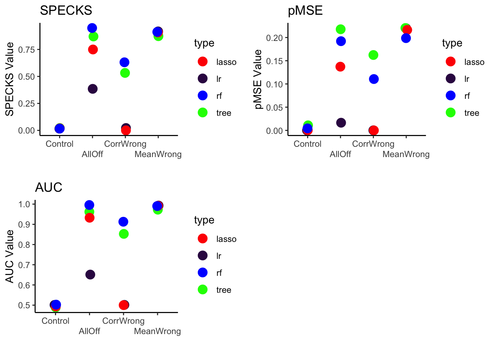

── Attaching core tidyverse packages ──────────────────────── tidyverse 2.0.0 ──
✔ dplyr 1.1.4 ✔ readr 2.1.4
✔ forcats 1.0.0 ✔ stringr 1.5.1
✔ ggplot2 3.4.4 ✔ tibble 3.2.1
✔ lubridate 1.9.2 ✔ tidyr 1.3.0
✔ purrr 1.0.2
── Conflicts ────────────────────────────────────────── tidyverse_conflicts() ──
✖ dplyr::filter() masks stats::filter()
✖ dplyr::lag() masks stats::lag()
ℹ Use the conflicted package (<http://conflicted.r-lib.org/>) to force all conflicts to become errors
Attaching package: 'srvyr'
The following object is masked from 'package:stats':
filter
Attaching package: 'data.table'
The following objects are masked from 'package:lubridate':
hour, isoweek, mday, minute, month, quarter, second, wday, week,
yday, year
The following objects are masked from 'package:dplyr':
between, first, last
The following object is masked from 'package:purrr':
transpose
Attaching package: 'recipes'
The following object is masked from 'package:stringr':
fixed
The following object is masked from 'package:stats':
step
Loading required package: usethis
Attaching package: 'devtools'
The following object is masked from 'package:recipes':
check
ℹ Loading syntheval
Loading required package: scales
Attaching package: 'scales'
The following object is masked from 'package:purrr':
discard
The following object is masked from 'package:readr':
col_factor
Attaching package: 'MASS'
The following object is masked from 'package:srvyr':
select
The following object is masked from 'package:dplyr':
select
Loading required package: lattice
Attaching package: 'caret'
The following object is masked from 'package:purrr':
lift
Attaching package: 'gt'
The following object is masked from 'package:testthat':
matchesDiscriminant-Based Metrics January Update
Introduction
In this document, I’m going to go through a summary of what I’ve been thinking about for the discriminant-based metrics project. In this project, I’m trying to see whether discriminant-based metrics are able to help us detect when synthesized data isn’t just generally a poor match for original data, but when it is specifically doing a poor job for a minority group.
- I’ve found that tree-based models are better than regression-based models when we have a synthetic dataset with issues in variable means, correlations between specific variables, or general mismatch. I thus used tree-based models for the discriminant-based metrics in the rest of the project.
- I picked an example dataset with majority-minority groups – the 2022 ACS microdata, separated by poverty status.
- When I compared data synthesized from only the majority group, then with majority-minority group membership permuted, to the original data, I saw that the discriminant based metrics did indicate that the dataset synthesized from only the majority group was more different than the confidential data compared to the dataset synthesized from the full confidential data.
- When I isolated the populations under consideration to the majority and minority groups, discriminant-based metrics revealed the weaknesses of the synthetic data for the minority group specifically.
- The above property did not hold for all majority/minority splits. While they held with a majority-minority split along poverty status, they did not hold with a majority-minority split along racial lines (not shown here).
Simulated Datasets
The goal of this project was to see whether we can detect when synthetic data are doing a poor job for a specific minority group. I first wanted to understand which models for discriminant-based metrics are best for which issues with synthetic data. I simulated confidential and synthetic datasets where the synthetic data are generally “off” compared to the confidential data and where the synthetic data have different variable means and correlations compared to the confidential data. I tested several different models (lasso, logistic regression, and CART) combined with the AUC, pMSE, and SPECKS discriminant-based metrics to see which model type did the best at discriminating between the two simulated datasets in which conditions. This would inform my choice of model for the second part of the project.
Code
n=10000 # number of samples
corr=.7 # correlation
p = 10 # number of variables
generate_postsynth <- function(data){
list(
synthetic_data = data,
jth_synthesis_time = data.frame(
variable = factor(colnames(data.frame(data)))
)
) %>%
structure(class = "postsynth")
}Code
# Same distribution
vcov = matrix(corr, p, p) + diag(1-corr, p, p) # vcov matrix, p on all off-diagonal variables
means = rep(0,p) # mean vector
conf1 = as_tibble(mvrnorm(means, vcov, n = n), n = p)Warning: The `x` argument of `as_tibble.matrix()` must have unique column names if
`.name_repair` is omitted as of tibble 2.0.0.
ℹ Using compatibility `.name_repair`.Code
synth1 = generate_postsynth(as_tibble(mvrnorm(means, vcov, n = n), n=p))
# larger variances, slightly off means
vcov = matrix(corr, p, p) + diag(1-corr, p, p) # vcov matrix, p on all off-diagonal variables
means = rep(0,p) # mean vector
conf2 = as_tibble(mvrnorm(means, vcov, n = n), n=p)
means = sample(c(-.2,.2), 10, replace = T) # mean vector
vcov = matrix(2*corr, p, p) + diag(4-2*corr, p, p) # vcov matrix, p on all off-diagonal variables
synth2 = generate_postsynth(as_tibble(mvrnorm(means, vcov, n = n), n=p))
# one variable centered at wrong value
vcov = matrix(corr, p, p) + diag(1-corr, p, p) # vcov matrix, p on all off-diagonal variables
means = rep(0,p) # mean vector
conf3 = as_tibble(mvrnorm(means, vcov, n = n), n=p)
means[1] = 2
synth3 = generate_postsynth(as_tibble(mvrnorm(means, vcov, n = n), n=p))
# relationship reversed (between V1 and everything else)
vcov = matrix(corr, p, p) + diag(1-corr, p, p) # vcov matrix, p on all off-diagonal variables
means = rep(0,p) # mean vector
conf4 = as_tibble(mvrnorm(means, vcov, n = n), n=p)
vcov[1,2:p] = -rep(corr, p-1)
vcov[2:p,1] = -rep(corr, p-1)
synth4 = generate_postsynth(as_tibble(mvrnorm(means, vcov, n = n), n=p))Code
# create models
tree_mod <- decision_tree(cost_complexity = tune()) %>%
set_mode(mode = "classification") %>%
set_engine(engine = "rpart")
lr_mod <- logistic_reg(engine = "glm") %>%
set_mode(mode = "classification")
lasso_mod <- logistic_reg(penalty = tune(), mixture = 1) %>%
set_mode(mode = "classification") %>%
set_engine(engine = "glmnet")
rf_mod <- rand_forest(
mode = "classification",
engine = "randomForest",
mtry = NULL,
trees = NULL,
min_n = NULL
)Code
# function to return the discriminator object with propensity scores for synthetic and confidential data
# and a model
# provide synthetic data, confidential data, model, name of model used (type), name of data (name), and parameter to tune, if any
make_disc <- function(synth, conf, mod, type, name, param = "none") {
rpart_rec <- recipe(.source_label ~ ., data = discrimination(synth, conf)$combined_data)
if (param == "none"){
# set up discriminator
d <- discrimination(synth, conf) %>%
add_propensities(
recipe = rpart_rec,
spec = mod
) %>%
add_discriminator_auc() %>%
add_specks() %>%
add_pmse()
}
else{
if (param == "penalty"){ # lasso model
rec = rpart_rec %>%
step_poly(all_numeric_predictors(), degree = 2) %>%
step_normalize(all_predictors())
grid = grid_regular(penalty(), levels = 10)
}
else if (param == "cp"){
rec = rpart_rec
grid = grid_regular(cost_complexity(), levels= 10)
}
# set up discriminator
d <- discrimination(synth, conf) %>%
add_propensities_tuned(
grid = grid,
recipe = rec,
spec = mod
) %>%
add_discriminator_auc() %>%
add_specks() %>%
add_pmse()
}
#return(d)
# extract the metrics and variable importance
c(d$pmse$.pmse[2], d$specks$.specks[2], d$discriminator_auc$.estimate[2],
type, name)
}Code
# iterate through all of the model pairs we've got
pairs <- list(list(synth1, conf1, "Control"),
list(synth2, conf2, "AllOff"),
list(synth3, conf3, "MeanWrong"),
list(synth4, conf4, "CorrWrong"))
df = data.frame(NULL)
for (elem in pairs) {
# for each type of pairing, we need to evaluate both model types on cont and cat data
df = rbind(df, make_disc(elem[[1]], elem[[2]], lr_mod, "lr", elem[[3]], "none"))
df = rbind(df, make_disc(elem[[1]], elem[[2]], tree_mod, "tree", elem[[3]], "cp"))
df = rbind(df, make_disc(elem[[1]], elem[[2]], lasso_mod, "lasso", elem[[3]], "penalty"))
df = rbind(df, make_disc(elem[[1]], elem[[2]], rf_mod, "rf", elem[[3]], "none"))
}
colnames(df) = c("pmse", "specks", "auc", "type", "name")
level_order <- c("Control", "AllOff", "CorrWrong", "MeanWrong")
group_colors <- c(lr ="#361052", tree = "green", lasso = "red", rf = "blue")Code
fig_a = ggplot(df, aes(x = factor(name, level = level_order),
group = type,
color = type,
y = as.numeric(specks)))+
geom_jitter(width = .03, size = 4)+
ylab("SPECKS Value")+
xlab("")+
ggtitle("SPECKS")+
scale_color_manual(values=group_colors)+
theme_classic()
fig_b = ggplot(df, aes(x = factor(name, level = level_order), group = type,
color = type, y = as.numeric(pmse)))+
geom_jitter(width = .03, size = 4)+
ylab("pMSE Value")+
xlab("")+
ggtitle("pMSE")+
scale_color_manual(values=group_colors)+
theme_classic()
fig_c = ggplot(df, aes(x = factor(name, level = level_order), group = type,
color = type, y = as.numeric(auc)))+
geom_jitter(width = .03, size = 4)+
ylab("AUC Value")+
xlab("")+
ggtitle("AUC")+
scale_color_manual(values=group_colors)+
theme_classic()
ggarrange(fig_a + scale_x_discrete(guide = guide_axis(n.dodge = 2)),
fig_b + scale_x_discrete(guide = guide_axis(n.dodge = 2)),
fig_c + scale_x_discrete(guide = guide_axis(n.dodge = 2)))
From this, we can see that the tree and random forest models, under all three decision-based metrics examined, detect the issues in synthesis we expect to see in the second portion of the project.
Choice of Dataset and Majority/Minority Split Variable
After settling on tree-based models for the discriminant-based metrics on real data, I had to choose a dataset and variable of interest. I would use the variable of interest to split into majority-minority groups and look at how we might be able to use discriminant-based metrics to detect when a synthetic dataset is doing a good job for one group but not another.
I chose to use the 2022 IPUMS ACS (https://usa.ipums.org/usa-action/) microdataset and chose the state Michigan at random to narrow down the size of the data. I pulled the variables “SEX”, “AGE”, “RACE”, “HCOVANY” (whether the person has health insurance coverage), “EDUC” (education level), “EMPSTAT” (employed, unemployed, or not in the labor force), “FTOTINC” (total family income), “POVERTY” (percentage of the poverty threshold, by family), and “VETSTAT” (veteran status).
Code
# pull dataset
data <- read_ipums_micro("data/usa_00004.xml")Use of data from IPUMS USA is subject to conditions including that users should cite the data appropriately. Use command `ipums_conditions()` for more details.Code
data <- data |>
mutate(across(where(is.labelled), ~as_factor(lbl_clean(.x))))
states <- c("Michigan")
vars <- c("STATEFIP", "PERNUM", "SEX", "AGE", "RACE",
"HCOVANY", "EDUC", "EMPSTAT", "FTOTINC", "POVERTY",
"VETSTAT")
data_mi <- data %>%
dplyr::select(all_of(vars)) %>%
filter(STATEFIP %in% states,
PERNUM == 1)
# recode factor variables (vetstat, sex, race, healthcare coverage, employment status didn't need recoding)
data_mi$EDUC <- recode(data_mi$EDUC,
"N/A or no schooling" = "N/A",
"Nursery school to grade 4" = "Less than high school",
"Grade 5, 6, 7, or 8" = "Less than high school",
"Grade 9" = "Some high school",
"Grade 10" = "Some high school",
"Grade 11" = "Some high school",
"Grade 12" = "High school",
"1 year of college" = "Some college",
"2 years of college" = "Some college",
"4 years of college" = "4+ years of college",
"5+ years of college" = "4+ years of college")
# recode numeric variables (age, poverty (as % of poverty threshold), and income)
data_mi$AGE <- as.numeric(as.character(recode(data_mi$AGE,
"Less than 1 year old"= "0",
"90 (90+ in 1980 and 1990)" = "90")))
data_mi$FTOTINC <- as.numeric(as.character(recode(data_mi$FTOTINC,
"No income (1950-2000, ACS/PRCS) " = "0")))Warning: NAs introduced by coercionCode
data_mi$POVERTY <- as.numeric(as.character(recode(data_mi$POVERTY,
"501 percent or more of poverty threshold" = "500",
"1 percent or less of poverty threshold (including 0 or negative income)" = "0")))Warning: NAs introduced by coercionCode
# set character NAs to be NA
data_mi[data_mi == "N/A"]<-NA
# create poverty indicator
data_mi$pov <- ifelse(data_mi$POVERTY < 100, 1, 0)
# complete case analysis of adults only
data_mi <- data_mi %>%
filter(AGE >= 19,
complete.cases(.)) %>%
dplyr::select(-c("STATEFIP", "PERNUM", "POVERTY"))
# get rid of unused NA levels in factors (educ, empstat, vetstat)
data_mi = droplevels(data_mi)Code
sum(data_mi$pov)/nrow(data_mi)[1] 0.113417I decided to split into majority-minority groups based on whether an individual is above or below 100% of the poverty level. 11% of the individuals in the data were below 100% of the poverty level, making them the minority group.
Evaluation of Discriminant-Based Metrics
I now create two scenarios: one, a control, in which I synthesize data from the entire original dataset (1), and the other, a test, in which I synthesize data from only the majority group in the original dataset (2). After creating dataset 2, I randomly permute the poverty indicator, thus creating a dataset that misrepresents people in poverty as having the same characteristics as the general population. I then compare discriminant-based metrics for these two scenarios.
When evaluated on the entire synthetic dataset against the entire confidential dataset, discriminant-based metrics indicate that it is easier to discriminate between the confidential data and dataset 2 compared to dataset 1. This is expected, since, for the majority of people in dataset 2, the control and test synthesis procedures were identical, but, for some people, the control and test syntheses are very different.
Additionally, when the groups of interest (majority and minority) are isolated, discriminant-based metrics indicate that it is easy to discriminate between the synthetic and confidential datasets for dataset 2 for people in poverty. This shows that discriminant-based metrics can be used to detect when synthetic datasets are a poor match to the confidential data for specific minority groups, in addition to indicating that the data are generally a poorer match at the whole dataset level.
I evaluate the metrics using random forest and tree-based models based on my results in section 1 (where these two were highest performing), and the results are consistent across metric choices and model specifications. This work suggests that discriminant-based metrics may generally agree on which subgroups of a dataset are well- or poorly- matched to confidential data.
Code
# function that takes start data and confidential data, and synthesizes dataset
synth_pov <- function(start_data, conf_data){
# synthesize categorical first, then continuous
visit_sequence = visit_sequence(c("SEX", "VETSTAT", "EMPSTAT", "EDUC", "HCOVANY", "RACE", "FTOTINC", "AGE"), start_data, type = "manual")
roadmap = roadmap(conf_data, start_data, visit_sequence)
recipe = construct_recipes(roadmap = roadmap)
tree_cl <- parsnip::decision_tree(cost_complexity = .0001) %>%
set_mode(mode = "classification") %>%
set_engine(engine = "rpart")
tree_reg <- parsnip::decision_tree(cost_complexity = .0001) %>%
set_mode(mode = "regression") %>%
set_engine(engine = "rpart")
synth_spec = synth_spec(roadmap,
synth_algorithms = list(tree_cl, tree_cl, tree_cl, tree_cl, tree_cl, tree_cl, tree_reg, tree_reg),
recipe,
predict_methods = sample_rpart)
# noise
noise <- noise(roadmap = roadmap,
add_noise = FALSE,
exclusions = 0)
# constraints
constraints <- constraints(roadmap = roadmap,
constraints = NULL,
max_z = 0)
replicates <- replicates(replicates = 1,
workers = 1,
summary_function = NULL)
# create a presynth object
presynth1 <- presynth(
roadmap = roadmap,
synth_spec = synth_spec,
noise = noise,
constraints = constraints,
replicates = replicates
)
synthesized = synthesize(presynth1, progress = TRUE)
synthesized
}
# functions to apply tree and random forest model discriminant-based metrics
disc_tree <- function(discriminator){
# Evaluate discriminant-based metrics on the data using tree-based model
tree_mod <- decision_tree(cost_complexity = tune()) %>%
set_mode(mode = "classification") %>%
set_engine(engine = "rpart")
rpart_rec <- recipe(.source_label ~ ., data = discriminator$combined_data)
grid = grid_regular(cost_complexity(), levels= 10)
# set up discriminator
d <- discriminator %>%
add_propensities_tuned(
grid = grid,
recipe = rpart_rec,
spec = tree_mod
) %>%
add_discriminator_auc() %>%
add_specks() %>%
add_pmse()
res = c(d$discriminator_auc, d$pmse, d$specks)
return(c(res$.estimate[2], res$.pmse[2], res$.specks[2]))
}
disc_rf <- function(discriminator){
# Evaluate discriminant-based metrics on the data using random forest
rand_forest_mod <- rand_forest(
mode = "classification",
engine = "randomForest",
mtry = NULL,
trees = NULL,
min_n = NULL
)
rpart_rec <- recipe(.source_label ~ ., data = discriminator$combined_data)
# set up discriminator
d_rf <- discriminator %>%
add_propensities(
recipe = rpart_rec,
spec = rand_forest_mod
) %>%
add_discriminator_auc() %>%
add_specks() %>%
add_pmse()
res = c(d_rf$discriminator_auc, d_rf$pmse, d_rf$specks)
return(c(res$.estimate[2], res$.pmse[2], res$.specks[2]))
}
# function to take synthesized data and return results of discriminant-based metrics for the whole dataset, the people in poverty in
# the confidential and synthetic datasets, and the people not in poverty in the confidential and synthetic datasets
eval_metrics <- function(synthesized_data, data_mi){
synthesized_data_pov <- synthesized_data %>%
filter(pov == 1)
data_mi_pov <- data_mi %>%
filter(pov == 1)
synthesized_data_nopov <- synthesized_data %>%
filter(pov == 0)
data_mi_nopov <- data_mi %>%
filter(pov == 0)
# whole dataset
d_synthesized = discrimination(synthesized_data, data_mi)
d_tree = disc_tree(d_synthesized)
d_rf= disc_rf(d_synthesized)
whole <- cbind(d_tree, d_rf)
# isolate to minority group
d_synthesized_pov = discrimination(synthesized_data_pov, data_mi_pov)
d_tree = disc_tree(d_synthesized_pov)
d_rf= disc_rf(d_synthesized_pov)
pov <- cbind(d_tree, d_rf)
# isolate to majority group
d_synthesized_nopov = discrimination(synthesized_data_nopov, data_mi_nopov)
nopov <- cbind(disc_tree(d_synthesized_nopov),
disc_rf(d_synthesized_nopov))
c(whole, pov, nopov)
}Code
# synthesize from original dataset
start_data = data_mi[,"pov"]
conf_data = data_mi
synthesized <- synth_pov(start_data, conf_data)[1] "1 SEX"
[1] "2 VETSTAT"
[1] "3 EMPSTAT"
[1] "4 EDUC"
[1] "5 HCOVANY"
[1] "6 RACE"
[1] "7 FTOTINC"
[1] "8 AGE"Code
synthesized_data <- synthesized$synthetic_data
# synthesize from only people not in poverty
start_data = data_mi[,"pov"]
start_data$pov = rep(0, nrow(data_mi))
conf_data = data_mi %>%
filter(pov == 0)
synthesized_perm <- synth_pov(start_data, conf_data)[1] "1 SEX"
[1] "2 VETSTAT"
[1] "3 EMPSTAT"
[1] "4 EDUC"
[1] "5 HCOVANY"
[1] "6 RACE"
[1] "7 FTOTINC"
[1] "8 AGE"Code
# apply permutation to dataset
synthesized_data_perm <- synthesized_perm$synthetic_data
synthesized_data_perm$pov <- permute(data_mi$pov)Metrics on majority and minority groups
Code
metrics_a <- eval_metrics(synthesized_data, data_mi)
metrics_b <- eval_metrics(synthesized_data_perm, data_mi)Code
dimnames = list(c("AUC", "pMSE", "SPECKS"), c("CART", "Random Forest"))
metrics_a = round(metrics_a, 3)
metrics_b = round(metrics_b, 3)
# format tables
whole_a = as.data.frame(matrix(metrics_a[1:6],ncol=2, dimnames = dimnames))
pov_a = as.data.frame(matrix(metrics_a[7:12],ncol=2, dimnames = dimnames))
nopov_a =as.data.frame(matrix(metrics_a[13:18],ncol=2, dimnames = dimnames))
whole_a %>% gt(rownames_to_stub = T) %>%
tab_header("Metrics on all people, synthesized from all data")| Metrics on all people, synthesized from all data | ||
| CART | Random Forest | |
|---|---|---|
| AUC | 0.581 | 0.586 |
| pMSE | 0.008 | 0.059 |
| SPECKS | 0.107 | 0.120 |
Code
pov_a %>% gt(rownames_to_stub = T) %>%
tab_header("Metrics on people below poverty line, synthesized from all data")| Metrics on people below poverty line, synthesized from all data | ||
| CART | Random Forest | |
|---|---|---|
| AUC | 0.645 | 0.658 |
| pMSE | 0.031 | 0.058 |
| SPECKS | 0.230 | 0.258 |
Code
nopov_a %>% gt(rownames_to_stub = T) %>%
tab_header("Metrics on people above poverty line, synthesized from all data")| Metrics on people above poverty line, synthesized from all data | ||
| CART | Random Forest | |
|---|---|---|
| AUC | 0.584 | 0.568 |
| pMSE | 0.008 | 0.061 |
| SPECKS | 0.112 | 0.094 |
Code
whole_b = as.data.frame(matrix(metrics_b[1:6],ncol=2, dimnames = dimnames))
pov_b = as.data.frame(matrix(metrics_b[7:12],ncol=2, dimnames = dimnames))
nopov_b =as.data.frame(matrix(metrics_b[13:18],ncol=2, dimnames = dimnames))
whole_b %>% gt(rownames_to_stub = T) %>%
tab_header("Metrics on all people, synthesized from people above poverty line")| Metrics on all people, synthesized from people above poverty line | ||
| CART | Random Forest | |
|---|---|---|
| AUC | 0.652 | 0.661 |
| pMSE | 0.028 | 0.079 |
| SPECKS | 0.187 | 0.207 |
Code
pov_b %>% gt(rownames_to_stub = T) %>%
tab_header("Metrics on people below poverty line, synthesized from people above poverty line")| Metrics on people below poverty line, synthesized from people above poverty line | ||
| CART | Random Forest | |
|---|---|---|
| AUC | 0.989 | 0.992 |
| pMSE | 0.226 | 0.217 |
| SPECKS | 0.928 | 0.916 |
Code
nopov_b %>% gt(rownames_to_stub = T) %>%
tab_header("Metrics on people above poverty line, synthesized from people above poverty line")| Metrics on people above poverty line, synthesized from people above poverty line | ||
| CART | Random Forest | |
|---|---|---|
| AUC | 0.580 | 0.569 |
| pMSE | 0.007 | 0.067 |
| SPECKS | 0.109 | 0.100 |